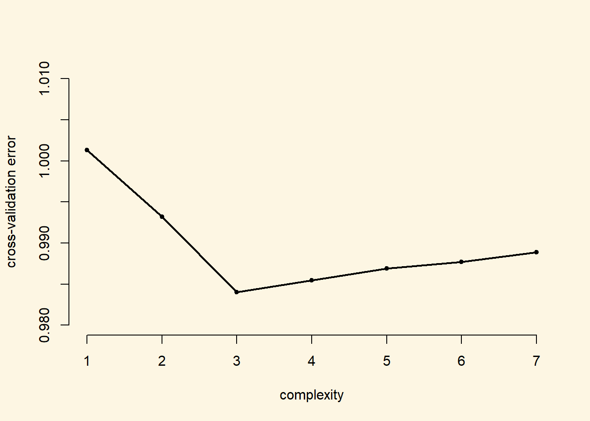

Chapter 10 Prediction and assessing prediction accuracy
10.1 Seminar
In this seminar we will cover classification, and assess model accuracy out-of-sample.
The non-western foreingers data is about the subjective perception of immigrants from non-western countries. The perception of immigrants from a context that is not similar to the one’s own ,is often used as a proxy for racism. Whether this is a fair measure or not is debatable but let’s examine the data from a survey carried out in Britain.
Let’s check the codebook of our data.
| Variable | Description |
|---|---|
| IMMBRIT | Out of every 100 people in Britain, how many do you think are immigrants from non-western countries? |
| over.estimate | 1 if estimate is higher than 10.7%. |
| RSex | 1 = male, 2 = female |
| RAge | Age of respondent |
| Househld | Number of people living in respondent’s household |
| party identification | 1 = Conservatives, 2 = Labour, 3 = SNP, 4 = Greens, 5 = Ukip, 6 = BNP, 7 = other |
| paper | Do you normally read any daily morning newspaper 3+ times/week? |
| WWWhourspW | How many hours WWW per week? |
| religious | Do you regard yourself as belonging to any particular religion? |
| employMonths | How many mnths w. present employer? |
| urban | Population density, 4 categories (highest density is 4, lowest is 1) |
| health.good | How is your health in general for someone of your age? (0: bad, 1: fair, 2: fairly good, 3: good) |
| HHInc | Income bands for household, high number = high HH income |
Let’s load the dataset.
Declaring categorical variables.
# data manipulation
df$RSex <- factor(df$RSex, labels = c("Male", "Female"))
df$health.good <- factor(df$health.good, labels = c("bad", "fair", "fairly good", "good") )We want to predict whether respondents over-estimate immigration from non-western contexts. We begin by normalizing our variables. Then we look at the distribution of the dependent variable. We check how well we could predict misperception of immigration in our sample without a statistical model.
# create a copy of the original IMMBRIT variable (needed for classification with lm)
df$IMMBRIT_original_scale <- df$IMMBRIT
# our function for normalization
our.norm <- function(x){
return((x - mean(x)) / sd(x))
}
# continuous variables
c.vars <- c("IMMBRIT", "RAge", "Househld", "HHInc", "employMonths", "WWWhourspW")
# normalize
df[, c.vars] <- apply( df[, c.vars], 2, our.norm )
# predict whether poeple overestimate rate of immigrants (i.e. more than 10.7%)
table(df$over.estimate)
0 1
290 759 [1] 0.7235462[1] 1Create dummy variables from our categorical variables.
df$Cons <- ifelse(df$party_self == 1, yes = 1, no = 0)
df$Lab <- ifelse(df$party_self == 2, yes = 1, no = 0)
df$SNP <- ifelse(df$party_self == 3, yes = 1, no = 0)
df$GP <- ifelse(df$party_self == 4, yes = 1, no = 0)
df$BNP <- ifelse(df$party_self == 6, yes = 1, no = 0)
df$Ukip <- ifelse(df$party_self == 5, yes = 1, no = 0)
df$party.other <- ifelse(df$party_self == 7, yes = 1, no = 0)
df$rural <- ifelse(df$urban == 1, yes = 1, no = 0)
df$partly.rural <- ifelse(df$urban == 2, yes = 1, no = 0)
df$urban <- ifelse(df$urban == 4, yes = 1, no = 0)Now, we fit a logistic regression.
# run logistic regression
m.log <- glm(over.estimate ~ RSex + RAge + Househld + Lab + SNP + Ukip + BNP +
GP + party.other + paper + WWWhourspW + religious +
employMonths + rural + partly.rural + urban +
health.good + HHInc, data = df,
family = binomial(link = "logit"))
summary(m.log)
Call:
glm(formula = over.estimate ~ RSex + RAge + Househld + Lab +
SNP + Ukip + BNP + GP + party.other + paper + WWWhourspW +
religious + employMonths + rural + partly.rural + urban +
health.good + HHInc, family = binomial(link = "logit"), data = df)
Deviance Residuals:
Min 1Q Median 3Q Max
-2.2342 -1.1328 0.6142 0.8262 1.3815
Coefficients:
Estimate Std. Error z value Pr(>|z|)
(Intercept) 0.72437 0.36094 2.007 0.0448 *
RSexFemale 0.64030 0.15057 4.253 2.11e-05 ***
RAge 0.01031 0.09073 0.114 0.9095
Househld 0.02794 0.08121 0.344 0.7308
Lab -0.31577 0.19964 -1.582 0.1137
SNP 1.85513 1.05603 1.757 0.0790 .
Ukip 0.05604 0.44846 0.125 0.9005
BNP 0.92131 0.57305 1.608 0.1079
GP -0.51315 0.46574 -1.102 0.2706
party.other 0.12542 0.18760 0.669 0.5038
paper 0.14855 0.15210 0.977 0.3287
WWWhourspW -0.02598 0.08008 -0.324 0.7457
religious 0.05139 0.15274 0.336 0.7365
employMonths 0.01899 0.07122 0.267 0.7897
rural -0.35097 0.21007 -1.671 0.0948 .
partly.rural -0.37978 0.19413 -1.956 0.0504 .
urban 0.12732 0.21202 0.601 0.5482
health.goodfair -0.09534 0.33856 -0.282 0.7782
health.goodfairly good 0.11669 0.31240 0.374 0.7087
health.goodgood 0.02744 0.31895 0.086 0.9314
HHInc -0.48513 0.08447 -5.743 9.30e-09 ***
---
Signif. codes: 0 '***' 0.001 '**' 0.01 '*' 0.05 '.' 0.1 ' ' 1
(Dispersion parameter for binomial family taken to be 1)
Null deviance: 1236.9 on 1048 degrees of freedom
Residual deviance: 1143.3 on 1028 degrees of freedom
AIC: 1185.3
Number of Fisher Scoring iterations: 5There are also two other ways to look at the estimated parameters of our model. We can just call the coefficients or we can exploit that they are an object within the summary object of the model object.
(Intercept) RSexFemale RAge
0.72437209 0.64029593 0.01031349
Househld Lab SNP
0.02793778 -0.31577137 1.85513031
Ukip BNP GP
0.05604390 0.92131027 -0.51314845
party.other paper WWWhourspW
0.12542127 0.14855174 -0.02597660
religious employMonths rural
0.05138795 0.01898927 -0.35096655
partly.rural urban health.goodfair
-0.37977789 0.12731654 -0.09534035
health.goodfairly good health.goodgood HHInc
0.11669492 0.02743714 -0.48513120 Estimate Std. Error z value Pr(>|z|)
(Intercept) 0.72437209 0.36093823 2.00691428 4.475879e-02
RSexFemale 0.64029593 0.15056566 4.25260266 2.113003e-05
RAge 0.01031349 0.09072502 0.11367858 9.094926e-01
Househld 0.02793778 0.08120874 0.34402436 7.308280e-01
Lab -0.31577137 0.19963619 -1.58173411 1.137103e-01
SNP 1.85513031 1.05602885 1.75670419 7.896824e-02
Ukip 0.05604390 0.44846178 0.12496918 9.005480e-01
BNP 0.92131027 0.57304844 1.60773542 1.078931e-01
GP -0.51314845 0.46574170 -1.10178763 2.705540e-01
party.other 0.12542127 0.18760248 0.66854805 5.037838e-01
paper 0.14855174 0.15210121 0.97666373 3.287357e-01
WWWhourspW -0.02597660 0.08008122 -0.32437813 7.456518e-01
religious 0.05138795 0.15273851 0.33644397 7.365361e-01
employMonths 0.01898927 0.07121623 0.26664249 7.897444e-01
rural -0.35096655 0.21006747 -1.67073251 9.477452e-02
partly.rural -0.37977789 0.19413416 -1.95626517 5.043393e-02
urban 0.12731654 0.21201600 0.60050437 5.481701e-01
health.goodfair -0.09534035 0.33855835 -0.28160685 7.782450e-01
health.goodfairly good 0.11669492 0.31239717 0.37354666 7.087416e-01
health.goodgood 0.02743714 0.31895327 0.08602245 9.314486e-01
HHInc -0.48513120 0.08447377 -5.74298026 9.302457e-09 (Intercept) RSexFemale RAge
4.475879e-02 2.113003e-05 9.094926e-01
Househld Lab SNP
7.308280e-01 1.137103e-01 7.896824e-02
Ukip BNP GP
9.005480e-01 1.078931e-01 2.705540e-01
party.other paper WWWhourspW
5.037838e-01 3.287357e-01 7.456518e-01
religious employMonths rural
7.365361e-01 7.897444e-01 9.477452e-02
partly.rural urban health.goodfair
5.043393e-02 5.481701e-01 7.782450e-01
health.goodfairly good health.goodgood HHInc
7.087416e-01 9.314486e-01 9.302457e-09 The parameters may be of interest if inference is our goal. But if we are just interested in classification we would like to make predictions. This can be done directly by using the predict() function:
# predict probabilities
pred.probs <- predict( m.log, type = "response")
pred.probs[1:10] # predictions for the first 10 respondents 1 2 3 4 5 6 7
0.5213789 0.9181186 0.8412570 0.8244665 0.8349719 0.6931744 0.9370885
8 9 10
0.6815346 0.9090575 0.6897961 To see how good our classification model is we need to compare the classification with the actual outcomes. We first create an object exp.out which will be either 0 or 1. In a second step, we cross-tab it with the true outcomes and this allows us to see how well the classification model is doing.
# predict whether respondent over-estimates or not
exp.out <- ifelse( pred.probs > 0.5, yes = 1, no = 0)
# confusion matrix (table of predictions and true outcomes)
table(prediction = exp.out, truth = df$over.estimate) truth
prediction 0 1
0 41 40
1 249 719The diagonal elements are the correct classifications and the off-diagonal ones are wrong. We can compute the share of correct classified observations as a ratio.
[1] 0.7244995We can also write code that will estimate the percentage correctly classified for different values.
[1] 0.7244995This is the performance on the training data and we expect the test error to be higher than this. To get at a better indication of the model’s classification error we can split the dataset into a training set and a test set.
# set the random number generator
set.seed(12)
# random draw of 80% of the observation (row numbers) to train the model
train.ids <- sample(nrow(df), size = as.integer( (nrow(df)*.80) ), replace = FALSE)
# the validation data
df.test <- df[ -train.ids, ]
dim(df.test)[1] 210 23Now we fit the model using the training data only and then test its performance on the test data.
# re-fit the model on the raining data
m.log <- glm(over.estimate ~ RSex + RAge + Househld + Lab + SNP + Ukip + BNP +
GP + party.other + paper + WWWhourspW + religious +
employMonths + rural + partly.rural + urban + health.good +
HHInc, data = df, subset = train.ids,
family = binomial(link = "logit"))
# predict probabilities of over-estimating but for the unseen data
pred.probs <- predict(m.log, newdata = df.test, type = "response")
# classify predictions as over-estimating or not
exp.out <- ifelse( pred.probs > 0.5, yes = 1, no = 0)
# confusion matrix of predictions against truth
table( prediction = exp.out, truth = df.test$over.estimate) truth
prediction 0 1
0 5 7
1 65 133[1] 0.6571429We see that the classification accuracy is too high in the training dataset. The accuracy on the test dataset provides a good estimate of the model’s abbility to correctly identify observations.
Let’s try to improve the classification model by relying on the best predictors.
# try to improve the prediction model by relying on "good" predictors
m.log <- glm(over.estimate ~ RSex + rural + partly.rural + urban + HHInc,
data = df, subset = train.ids, family = binomial(link = "logit"))
pred.probs <- predict(m.log, newdata = df.test, type = "response")
exp.out <- ifelse( pred.probs > 0.5, yes = 1, no = 0)
table( prediction = exp.out, truth = df.test$over.estimate ) truth
prediction 0 1
0 6 4
1 64 136[1] 0.6761905We see that the classification model’s accurcy increases when we only rely the strongest predictors.
You can also make predictions for specific settings:
# prediction for a specific setting
predict(m.log, newdata = data.frame( RSex = c("Male", "Female"),
rural = c(0, 0),
partly.rural = c(0, 0),
urban = c(0, 0),
HHInc = c(9, 9)), type = "response") 1 2
0.02372597 0.04504885 10.1.1 Model the Underlying Continuous Process
Lastly, we can try to model the underlying process and classify afterwards. By doing that, the depdendent variable provides more information. In effect we turn our classification problem into a regression problem.
# fit the linear model on the numer of immigrants per 100 Brits
m.lm <- lm(IMMBRIT ~ RSex + rural + partly.rural + urban + HHInc,
data = df, subset = train.ids)
# predict
y_hat <- predict(m.lm, newdata = df.test)
# threshold for classfication
threshold <- (10.7 - mean(df$IMMBRIT_original_scale)) / sd(df$IMMBRIT_original_scale)
# now we do the classfication
exp.out <- ifelse( y_hat > threshold, yes = 1, no = 0)
# confusion matrix
table( prediction = exp.out, truth = df.test$over.estimate) truth
prediction 0 1
1 70 140[1] 0.6666667We do worse by treating this as a regression problem rather than a classification problem.
10.1.2 Leave-One-Out-Cross-Validation
The glm() function offers a generalization of the linear model while allowing for different link functions and error distributions other than gaussian. By default, glm() simply fits a linear model identical to the one estimated with lm().
# linear regression fitted with glm() and lm()
glm.fit <- glm( IMMBRIT ~ RAge, data = df)
lm.fit <- lm( IMMBRIT ~ RAge, data = df)The glm() function can be used with cv.glm() to estimate k-fold cross-validation prediction error.
# use cv.glm() for k-fold corss-validation on glm
library(boot)
cv.err <- cv.glm(df, glm.fit)
# cross-validation error
cv.err$delta[1] 1.001291 1.001289[1] 1049The returned value from cv.glm() contains a delta vector of components - the raw cross-validation estimate and the adjusted cross-validation estimate respectively. We are interested in the raw cross-validation error.
NOTE: if we do not provide the option K in cv.glm() we automatically perfrom LOOCV.
We can repeat this process in a for() loop to compare the cross-validation error of higher-order polynomials. The following example estimates the polynomial fit of the order 1 through 7 and stores the result in a cv.error vector.
# container for cv errors
cv.error <- NA
# loop over age raised to the power 1...7
for (i in 1:7){
glm.fit <- glm( IMMBRIT ~ poly(RAge, i), data = df )
cv.error[i] <- cv.glm(df, glm.fit)$delta[1]
}
cv.error[1] 1.0012907 0.9932016 0.9840021 0.9854419 0.9869106 0.9876803 0.9888996We plot the effect of increasing the complexity of the model
# plot of error rates
plot(x = seq(1, 7),
y = cv.error,
bty = "n",
pch = 20,
xlab = "complexity",
ylab = "cross-validation error",
ylim = c(0.98, 1.01))
lines( y = cv.error, x = seq(1,7), lwd = 2)